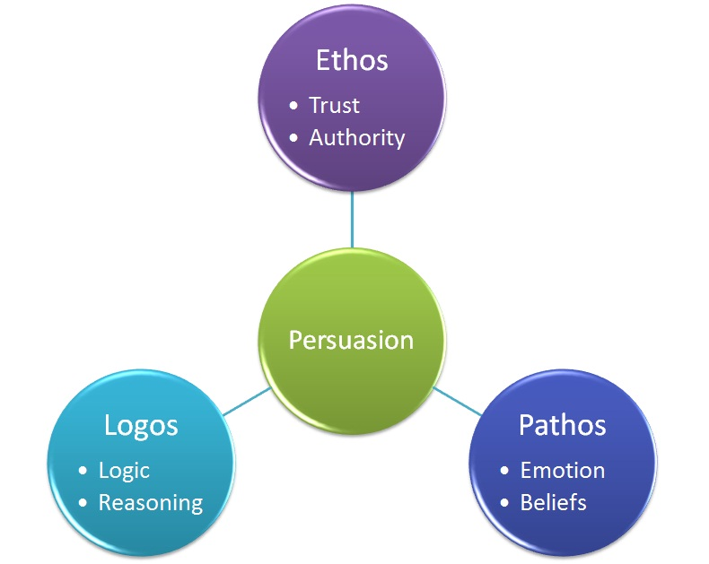
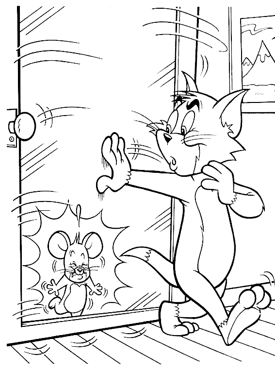

La manipulation commerciale
Lorsque l’on évoque la manipulation commerciale, on pense également au commercial en chair et en os qui essaie de vous vendre un produit ou un service. Nous allons ici nous concentrer sur les techniques autres que l’argumentation classique pour vendre un produit.
Un commercial a donc besoin de convaincre le client grâce à la communication et donc la rhétorique. Il existe depuis l’antiquité 3 théories sur la rhétorique qui peuvent se résumer aux termes : LOGOS, PATHOS et ETHOS. Le Logos, théorisé par Aristote désigne la logique, le raisonnement et les arguments factuels. Le Pathos , de Platon regroupe les arguments suscitant la sensibilité, l’émotion chez le spectateur. Enfin, la prestance, le style de l’orateur et la confiance que l’on a en lui constituent l’Ethos (Cicéron).
En effet, l’argumentation classique visant simplement à dire pourquoi le produit est intéressant se sert du Logos. Les techniques de manipulation commerciale dont nous allons parler s’appuient surtout sur le Pathos et l’Ethos, notamment les normes sociales. On principalement retrouve parmi ces normes et mécanismes sociaux l’engagement et la réciprocité, que nous allons aborder plus en détail.
L'engagement
C’est une des normes sociales que l’on ressent lors d’échanges avec un vendeur généralement. Par exemple : Il vous êtes peut être déjà arrivé d’essayer des vêtements que vous n’aimez pas juste parce que le vendeur vous l’a proposé. Même si vous n’allez pas acheter ce vêtement, vous pouvez vous sentir comme “obligé” d’en acheter un autre, car vous vous êtes engagés en essayant un vêtement.
Une technique de vente exploite ce phénomène social : “Le pied dans la porte”. Elle repose en effet sur le principe nécessitant de faire accepter un premier service ou achat bénin au client, dans l'intérêt de la mettre en condition pour le second service plus important, celui visé par le vendeur. Pour rester cohérent avec ses actes, il y a plus de chance que le client achète le produit dans ce contexte.
La cohérence joue un rôle important dans ce phénomène d’engagement. Prenons exemple pour l’achat d’une voiture. Le vendeur présente au client une voiture avec une réduction de 1500 euros par rapport au prix de départ. Naturellement, le client est généralement intéressé. Suite à cette proposition, après avoir engagé les procédures d’achat et essayé l’automobile, on observe chez le client un phénomène de “cultivation” de nouvelles raisons pour acheter cette voiture en plus de son prix. Cependant, juste avant de sortir le contrat final, le vendeur indique au client qu’il y a une “erreur” et que la fameuse réduction est impossible. Étonnamment le client aura tendance à rester sur sa décision car ses raisons construites par lui-même lui suffisent désormais. De plus, en plus de rester cohérent avec lui-même, refuser le contrat casserait l’engagement avec le vendeur, ce qui peut être mal vu bien que cela ne soit pas illégitime.
L’engagement peut être très efficace, surtout pour un commerciale à domicile. Plus vous êtes engagé à acheter, plus il devient dur de refuser. Les commerciaux essayent alors de vous engager inconsciemment.
Voici un cas parlant. Vous avez rendez-vous avec un commerciale à votre domicile. Cependant celui-ci vous appelle pour vous informer qu’il est perdu. Naturellement vous l’aidez à trouver la route. Or, inconsciemment vous vous engagez déjà en l’aidant à venir chez vous. Ce n’est plus lui qui veut venir vous vendre son produit, mais vous qui le faites venir : c’est une situation de motivation inversée. Par ailleurs, cette simple “maladresse” tranche avec le standard du commercial et stimule donc la sympathie envers lui.
Une fois le vendeur arrivé et après vous avoir présenté son produit/service, il va chercher à vous imposer un nouveau rendez-vous pour vous présenter le devis et même signer le contrat si possible. Les recherches en psychologies montrent qu’un bon manipulateur doit donner le sentiment à l’autre d’être libre. C’est pourquoi au lieu de vous demander directement “est-ce que se revoit ?”, il va plutôt vous demander “Quand est-ce qu’on se revoit ?” en vous proposant des dates comme si le fait de se revoir était déjà établi. C’est ce qu’on appelle l’alternative illusoire. En vous laissant le choix pour la date, vous oubliez que le revoir est imposé. De plus, si vous refusez, vous briserez la sympathie et l’engagement avec le vendeur.
Cependant lors de ce prochain rendez-vous, il sera encore plus difficile de refuser. En effet, c’est non pas une mais deux personnes qui peuvent vous accueillir, dans le but d’augmenter la pression et grandir une fois de plus votre engagement, car vous faites déplacer 2 vendeurs. Après vous avoir rappelé que c’est ce produit que vous voulez, qu’il est bien au prix dont vous aviez parlé, il devient presque impossible de faire marche arrière. Enfin, ils vous tendent le devis voir directement le contrat avec un stylo. La question “est-ce que j’ai réellement besoin de ce produit ?” est muselée par le sentiment d’engagement ( refuser au dernier moment est mal vu, et il faudrait vous expliquer aux 2 commerciaux ). Vous signez alors par réflexe le contrat, sous le regard ravi des commerciaux.
La réciprocité
La réciprocité est également un des piliers de la vente en personne. Son effet est parfois si important qu’il peut annihiler l’effet de la sympathie comme le montre l’expérience du Dr. Regan. Un sujet devait apprécier la qualité de certains tableaux dans le cadre d’une expérience sur « le jugement artistique ». Un autre sujet prenait part à l’expérience ; c’était en réalité l’assistant Joe du Dr Regan. Pour ce qui nous intéresse, l’expérience se déroulait suivant deux schémas différents. Dans certains cas, Joe avait une petite attention pour le sujet. Pendant une pause, il quittait la pièce quelques minutes et rapportait deux bouteilles de Coca-Cola, une pour lui, une pour le sujet, en disant : « J’ai demandé si je pouvais aller chercher un Coca, et on m’a dit que oui, alors j’en ai pris un pour vous. » Dans d’autres cas, Joe ne faisait rien de spécial pour le sujet. Par la suite, lorsque les tableaux avaient tous été notés et que l’expérimentateur s’absentait un moment de la pièce, Joe demandait au sujet de faire quelque chose pour lui. Il expliquait qu’il vendait des billets de loterie à vingt-cinq cents pièce. « Le nombre que vous voulez. ». Il apparaissait clairement que les sujets ayant reçu un service achètent en moyenne 2 fois plus de tickets que les autres. Toutefois après avoir rempli un questionnaire sur Joe, on observait que lorsqu’ils avaient reçus un service, les sujets ne trouvant pas Joe sympathique achète autant que ceux le trouvant sympathique.
La réciprocité, présente dans les normes sociales de toutes les civilisations, peut donc être très puissante dans la vente.
Des sectes comme Krishna ont d’ailleurs explosé dans les années 70 juste en offrant une fleur trouvé dans la nature au lieu de faire simplement la manche.
Dans la vente, on exploite la réciprocité avec une technique simple mais efficace : La porte au nez. Cette technique consiste à exploiter la culpabilité en essayant de faire refuser un premier service un peu extravagant, pour permettre au second ,plus raisonnable, d'être accepté.Un vendeur présentera donc un produit/service très cher, dans l’optique d’en vendre un moins cher par la suite. Les résultats sont similaire à l’expérience du Dr Regan : 2 fois plus de recettes lorsque la porte au nez est appliqué.
Une technique similaire s’appuie sur la culpabilité, le “pied dans la mémoire”. Celle-ci consiste à demander au sujet de rechercher dans sa mémoire un souvenir de comportement négatif ou fautif. Il aura alors plus de chance de s'engager à ne plus avoir à l'avenir ce comportement. Exemple : Vous avez sûrement déjà essayé de regarder des Films en streaming ? Mauvaise Qualité, Trop Lent, Trop de Publicités ? Ici chez XXX, nous vous offrons un service unique et exceptionnel.
En somme, la manipulation commerciale utilise principalement des normes sociales pour amener le client à acheter, par des phénomènes d’engagement et réprocité. Cependant comment se défendre face à ces manipulations ? Tout d’abord, Gardez toujours en tête un raisonnement logique vis-à-vis de votre besoin face au produit, même si il vous parait peu cher par rapport à un autre. Méfiez-vous des offres trop alléchantes et n’hésitez-pas à refuser un rendez-vous si vous n’êtes pas sur d’acheter, demandez plutôt à ce que l’on vous envoie le devis. Enfin, il ne faut pas voir le mal partout, un commercial peut vraiment être perdu par exemple. En effet, si les commerciaux usent des ces techniques, c’est souvent pour garder leur travail à cause d’une forte pression de la part des supérieurs.